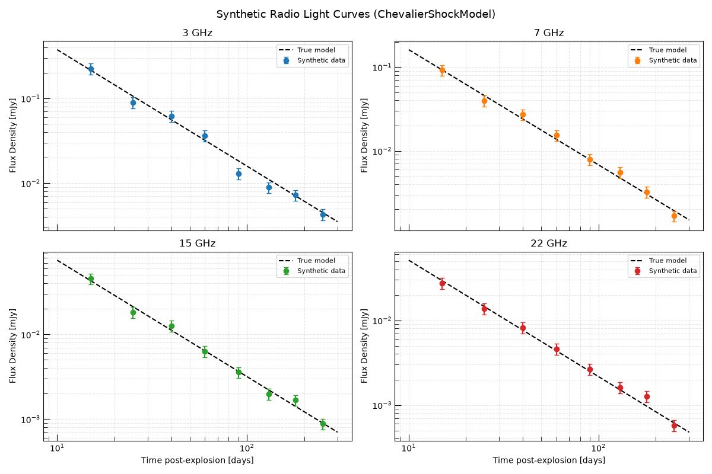
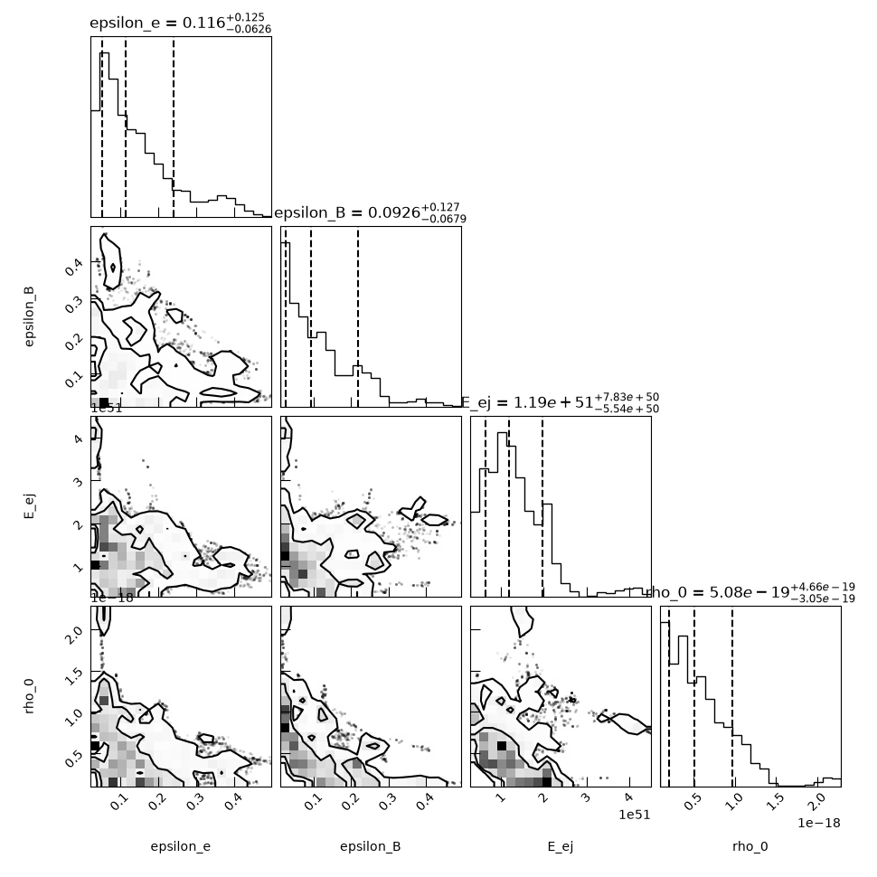
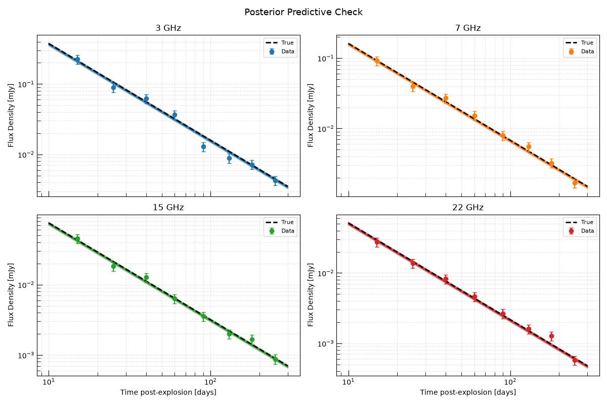

Note
Go to the end to download the full example code.
Inferring Physical Shock Parameters from a Radio Supernova#
This example demonstrates the full science-grade inference workflow for recovering the astrophysical parameters of a radio supernova from multi-frequency radio observations.
The goal is to directly infer the progenitor’s mass-loss history and the supernova’s explosion energy from radio data — parameters that probe the progenitor star decades before the explosion.
The Physical Model#
We use ChevalierShockModel, which
implements the Chevalier (1982) self-similar solution for a supernova shock
expanding into a wind-stratified CSM. The model computes the synchrotron flux
density at a given frequency and time directly from six physical parameters:
Explosion / ejecta parameters:
\(E_{\rm ej}\) — total kinetic energy of the ejecta [erg]
\(M_{\rm ej}\) — ejecta mass [\(M_\odot\)]
\(n\) — outer ejecta density power-law index
CSM parameters (encoding the progenitor wind):
\(\dot{M}\) — progenitor mass-loss rate [\(M_\odot/{\rm yr}\)]
\(v_{\rm w}\) — progenitor wind speed [km/s] (together these give the wind density \(\rho_w \propto \dot{M}/v_w r^{-2}\))
Microphysical parameters:
\(\epsilon_e\) — electron energy fraction
\(\epsilon_B\) — magnetic energy fraction
\(p\) — electron energy distribution power-law index
For this example we fix \(n = 10\) (canonical for Type Ibc supernovae), \(M_{\rm ej} = 2 M_\odot\), and \(p = 3\), and infer the remaining four parameters.
Overview#
Simulate synthetic multi-frequency radio light curves using known true parameter values.
Set up an InferenceProblem with physically motivated priors.
Run MCMC to sample the posterior.
Analyze the results — corner plot, posterior predictive check, and physical interpretation.
Relevant API#
ChevalierShockModelInferenceProblemEmceeSampler
Setup#
import matplotlib.pyplot as plt
import numpy as np
from astropy import units as u
from trilobite.models.supernovae.chevalier_shock import ChevalierShockModel
from trilobite.utils.plot_utils import set_plot_style
set_plot_style()
rng = np.random.default_rng(42)
Define True Parameters and Generate Synthetic Observations#
We simulate observations of a radio-bright Type Ibc supernova at 10 Mpc. The true parameters are chosen to represent a moderate mass-loss rate progenitor, similar to observed events like SN 2011dh or SN 2002ap.
We observe at 4 frequencies spanning VLA bands (3, 7, 15, 22 GHz) and 8 epochs from 10 to 200 days post-explosion.
shock_model = ChevalierShockModel()
# ------ True physical parameters ------
true_params = {
"E_ej": 1.0e51 * u.erg, # Kinetic energy
"M_ej": 2.0 * u.Msun, # Ejecta mass (fixed in inference)
"n": 10.0, # Outer ejecta index (fixed)
"s": 2.0, # CSM power-law index (wind; fixed)
"rho_0": 5e-19 * u.g / u.cm**3, # CSM density at 1e14 cm
"delta": 0.0, # Inner ejecta index (fixed)
"epsilon_e": 0.1, # Electron energy fraction
"epsilon_B": 0.1, # Magnetic energy fraction
"p": 3.0, # Electron index (fixed)
"gamma_min": 1.0,
"gamma_max": 1e7,
"f": 0.5,
"theta": np.pi / 2,
"smoothing_s": -0.5,
"D": 10.0, # Distance in Mpc
}
# Observing setup
frequencies = u.Quantity([3.0, 7.0, 15.0, 22.0], u.GHz)
epochs = u.Quantity([15.0, 25.0, 40.0, 60.0, 90.0, 130.0, 180.0, 250.0], u.day)
noise_frac = 0.15
# Generate synthetic light curves
syn_data = {}
for freq in frequencies:
fluxes_t = []
for t in epochs:
variables = {"frequency": freq.to(u.Hz), "time": t.to(u.s)}
flux = shock_model.forward_model(variables, true_params).flux_density.to(u.mJy)
noise = rng.normal() * noise_frac * flux
fluxes_t.append((flux + noise).to(u.mJy))
syn_data[freq.to_value(u.GHz)] = u.Quantity(fluxes_t)
Visualize the Synthetic Light Curves#
colors = ["C0", "C1", "C2", "C3"]
fig, axes = plt.subplots(2, 2, figsize=(12, 8), sharex=True)
axes = axes.flatten()
t_dense = np.geomspace(10.0, 300.0, 200) * u.day
for ax, (freq, color) in zip(axes, zip(frequencies, colors)):
# True model
true_lc = []
for t in t_dense:
v = {"frequency": freq.to(u.Hz), "time": t.to(u.s)}
true_lc.append(shock_model.forward_model(v, true_params).flux_density.to_value(u.mJy))
ax.loglog(t_dense.to_value(u.day), true_lc, color="black", lw=1.5, ls="--", label="True model")
# Observations
obs = syn_data[freq.to_value(u.GHz)]
errs = noise_frac * obs
ax.errorbar(
epochs.to_value(u.day),
obs.to_value(u.mJy),
yerr=errs.to_value(u.mJy),
fmt="o",
color=color,
capsize=3,
ms=6,
label="Synthetic data",
)
ax.set_title(f"{freq.to_value(u.GHz):.0f} GHz")
ax.set_ylabel("Flux Density [mJy]")
ax.legend(fontsize=8)
ax.grid(True, which="both", ls="--", alpha=0.3)
axes[2].set_xlabel("Time post-explosion [days]")
axes[3].set_xlabel("Time post-explosion [days]")
plt.suptitle("Synthetic Radio Light Curves (ChevalierShockModel)", fontsize=13)
plt.tight_layout()
plt.show()

Set Up the Inference Problem#
We infer four physical parameters:
\(E_{\rm ej}\) — total ejecta kinetic energy [erg], log-uniform prior (scale-free quantity, uncertain over orders of magnitude)
\(\rho_0\) — CSM density at 1e14 cm [g/cm³], log-uniform prior (directly related to mass-loss rate)
\(\epsilon_e\) — electron energy fraction, log-uniform prior (typical range 0.01–0.5)
\(\epsilon_B\) — magnetic energy fraction, log-uniform prior
Log-uniform (Jeffreys) priors are appropriate for scale-free parameters whose order of magnitude is uncertain.
The remaining parameters are fixed at their true values.
from astropy.table import Table, vstack
from trilobite.data import InferenceData
from trilobite.data.photometry import RadioPhotometryEpochContainer
from trilobite.inference import GaussianCensoredLikelihood
from trilobite.inference.likelihood.base import GaussianLikelihood
from trilobite.inference.problem import InferenceProblem
from trilobite.inference.sampling.mcmc import EmceeSampler
# Build a stacked multi-frequency, multi-epoch data table
tables = []
for freq in frequencies:
for i, t in enumerate(epochs):
row = Table()
row["freq"] = [freq.to(u.Hz)]
row["time"] = [t.to(u.s)]
obs_f = syn_data[freq.to_value(u.GHz)][i]
row["flux_density"] = [obs_f]
row["flux_density_error"] = [noise_frac * obs_f]
row["flux_upper_limit"] = [np.nan * u.mJy]
tables.append(row)
data_table = vstack(tables)
photometry = RadioPhotometryEpochContainer(data_table)
inference_data = InferenceData.from_table(
shock_model,
photometry.table,
variables={"frequency": "freq", "time": "time"},
observables={
"flux_density": ("flux_density", "flux_density_error", "flux_upper_limit", None),
},
)
likelihood = GaussianCensoredLikelihood(model=shock_model, data=inference_data)
problem = InferenceProblem(likelihood=likelihood)
# Log-uniform priors on scale-free parameters
problem.set_prior("E_ej", "loguniform", lower=1e49 * u.erg, upper=1e53 * u.erg)
problem.set_prior("rho_0", "loguniform", lower=1e-21 * u.g / u.cm**3, upper=1e-17 * u.g / u.cm**3)
problem.set_prior("epsilon_e", "loguniform", lower=0.01, upper=0.5)
problem.set_prior("epsilon_B", "loguniform", lower=0.01, upper=0.5)
# Set initial values within the prior bounds (required for sampler validation)
problem.parameters["E_ej"].initial_value = 1e51 * u.erg
problem.parameters["rho_0"].initial_value = 5e-19 * u.g / u.cm**3
problem.parameters["epsilon_e"].initial_value = 0.1
problem.parameters["epsilon_B"].initial_value = 0.1
# Fix all other parameters. Pass Quantities directly so that the initial_value
# setter can convert to the model's base units (e.g. M_ej in g, not M_sun).
for name in ["M_ej", "n", "s", "delta", "p", "gamma_min", "gamma_max", "f", "theta", "smoothing_s", "D"]:
problem.parameters[name].initial_value = true_params[name]
problem.parameters[name].freeze = True
print("Free parameters:")
for name, par in problem.parameters.items():
if not par.freeze:
print(f" {name}")
/home/runner/work/Trilobite/Trilobite/docs/source/galleries/inference/plot_shock_parameter_inference.py:209: DeprecationWarning: RadioPhotometryEpochContainer is deprecated and will be removed in a future release. Use RadioPhotometryEpoch instead.
photometry = RadioPhotometryEpochContainer(data_table)
Free parameters:
epsilon_e
epsilon_B
E_ej
rho_0
Run MCMC#
We run the MCMC with 32 walkers for 15,000 steps. In a real analysis you would check convergence using the trace plots and autocorrelation lengths.
sampler = EmceeSampler(problem, n_walkers=32)
result = sampler.run(15_000, progress=True)
samples = result.get_flat_samples(burn=5000, thin=10)
print(f"\nPosterior samples: {samples.shape[0]}")
0% | | 🦖 0/15000 [00:00<?, ?it/s]
0% | | 🦖 20/15000 [00:00<01:16, 196.11it/s]
0% | | 🦖 40/15000 [00:00<01:16, 196.58it/s]
0% | | 🦖 60/15000 [00:00<01:15, 197.77it/s]
1% | | 🦖 80/15000 [00:00<01:15, 197.49it/s]
1% | | 🦖 100/15000 [00:00<01:15, 198.10it/s]
1% | | 🦖 120/15000 [00:00<01:15, 197.68it/s]
1% | | 🦖 140/15000 [00:00<01:14, 198.37it/s]
1% | | 🦖 161/15000 [00:00<01:14, 199.10it/s]
1% | | 🦖 182/15000 [00:00<01:14, 200.00it/s]
1% |▏ | 🦖 203/15000 [00:01<01:13, 200.13it/s]
1% |▏ | 🦖 224/15000 [00:01<01:13, 200.32it/s]
2% |▏ | 🦖 245/15000 [00:01<01:13, 201.44it/s]
2% |▏ | 🦖 266/15000 [00:01<01:13, 201.24it/s]
2% |▏ | 🦖 287/15000 [00:01<01:13, 201.00it/s]
2% |▏ | 🦖 308/15000 [00:01<01:12, 201.33it/s]
2% |▏ | 🦖 329/15000 [00:01<01:12, 202.52it/s]
2% |▏ | 🦖 350/15000 [00:01<01:12, 203.06it/s]
2% |▏ | 🦖 371/15000 [00:01<01:11, 203.63it/s]
3% |▎ | 🦖 392/15000 [00:01<01:11, 203.57it/s]
3% |▎ | 🦖 413/15000 [00:02<01:11, 203.09it/s]
3% |▎ | 🦖 434/15000 [00:02<01:11, 203.58it/s]
3% |▎ | 🦖 455/15000 [00:02<01:11, 204.16it/s]
3% |▎ | 🦖 476/15000 [00:02<01:11, 204.08it/s]
3% |▎ | 🦖 497/15000 [00:02<01:11, 204.13it/s]
3% |▎ | 🦖 518/15000 [00:02<01:11, 203.68it/s]
4% |▎ | 🦖 539/15000 [00:02<01:10, 204.55it/s]
4% |▎ | 🦖 560/15000 [00:02<01:10, 205.01it/s]
4% |▍ | 🦖 581/15000 [00:02<01:10, 204.57it/s]
4% |▍ | 🦖 603/15000 [00:02<01:09, 206.36it/s]
4% |▍ | 🦖 624/15000 [00:03<01:09, 206.99it/s]
4% |▍ | 🦖 645/15000 [00:03<01:09, 207.42it/s]
4% |▍ | 🦖 666/15000 [00:03<01:08, 207.90it/s]
5% |▍ | 🦖 687/15000 [00:03<01:08, 208.36it/s]
5% |▍ | 🦖 709/15000 [00:03<01:08, 209.42it/s]
5% |▍ | 🦖 731/15000 [00:03<01:07, 210.72it/s]
5% |▌ | 🦖 753/15000 [00:03<01:07, 212.37it/s]
5% |▌ | 🦖 775/15000 [00:03<01:06, 212.94it/s]
5% |▌ | 🦖 797/15000 [00:03<01:06, 211.99it/s]
5% |▌ | 🦖 819/15000 [00:04<01:06, 211.68it/s]
6% |▌ | 🦖 841/15000 [00:04<01:06, 212.02it/s]
6% |▌ | 🦖 863/15000 [00:04<01:06, 211.98it/s]
6% |▌ | 🦖 885/15000 [00:04<01:06, 211.98it/s]
6% |▌ | 🦖 907/15000 [00:04<01:06, 211.23it/s]
6% |▌ | 🦖 929/15000 [00:04<01:06, 211.11it/s]
6% |▋ | 🦖 951/15000 [00:04<01:06, 210.97it/s]
6% |▋ | 🦖 973/15000 [00:04<01:06, 211.49it/s]
7% |▋ | 🦖 995/15000 [00:04<01:05, 212.32it/s]
7% |▋ | 🦖 1017/15000 [00:04<01:05, 212.91it/s]
7% |▋ | 🦖 1039/15000 [00:05<01:05, 212.82it/s]
7% |▋ | 🦖 1061/15000 [00:05<01:05, 213.21it/s]
7% |▋ | 🦖 1083/15000 [00:05<01:04, 214.83it/s]
7% |▋ | 🦖 1105/15000 [00:05<01:05, 213.47it/s]
8% |▊ | 🦖 1128/15000 [00:05<01:04, 215.73it/s]
8% |▊ | 🦖 1151/15000 [00:05<01:03, 216.85it/s]
8% |▊ | 🦖 1173/15000 [00:05<01:03, 217.56it/s]
8% |▊ | 🦖 1195/15000 [00:05<01:03, 217.97it/s]
8% |▊ | 🦖 1218/15000 [00:05<01:03, 218.64it/s]
8% |▊ | 🦖 1241/15000 [00:05<01:02, 219.55it/s]
8% |▊ | 🦖 1263/15000 [00:06<01:02, 219.37it/s]
9% |▊ | 🦖 1285/15000 [00:06<01:02, 218.01it/s]
9% |▊ | 🦖 1307/15000 [00:06<01:02, 217.94it/s]
9% |▉ | 🦖 1330/15000 [00:06<01:02, 218.82it/s]
9% |▉ | 🦖 1352/15000 [00:06<01:02, 218.04it/s]
9% |▉ | 🦖 1375/15000 [00:06<01:01, 220.35it/s]
9% |▉ | 🦖 1398/15000 [00:06<01:01, 221.40it/s]
9% |▉ | 🦖 1421/15000 [00:06<01:01, 221.21it/s]
10% |▉ | 🦖 1444/15000 [00:06<01:01, 220.81it/s]
10% |▉ | 🦖 1467/15000 [00:06<01:01, 220.18it/s]
10% |▉ | 🦖 1490/15000 [00:07<01:01, 218.03it/s]
10% |█ | 🦖 1513/15000 [00:07<01:01, 219.65it/s]
10% |█ | 🦖 1535/15000 [00:07<01:01, 218.93it/s]
10% |█ | 🦖 1557/15000 [00:07<01:01, 218.27it/s]
11% |█ | 🦖 1579/15000 [00:07<01:01, 218.67it/s]
11% |█ | 🦖 1602/15000 [00:07<01:00, 220.29it/s]
11% |█ | 🦖 1625/15000 [00:07<01:00, 220.22it/s]
11% |█ | 🦖 1648/15000 [00:07<01:00, 221.06it/s]
11% |█ | 🦖 1671/15000 [00:07<01:00, 221.86it/s]
11% |█▏ | 🦖 1694/15000 [00:08<01:00, 220.30it/s]
11% |█▏ | 🦖 1717/15000 [00:08<01:00, 221.24it/s]
12% |█▏ | 🦖 1740/15000 [00:08<00:59, 221.73it/s]
12% |█▏ | 🦖 1763/15000 [00:08<00:59, 220.86it/s]
12% |█▏ | 🦖 1786/15000 [00:08<00:59, 221.19it/s]
12% |█▏ | 🦖 1809/15000 [00:08<00:59, 220.81it/s]
12% |█▏ | 🦖 1832/15000 [00:08<01:00, 219.05it/s]
12% |█▏ | 🦖 1854/15000 [00:08<01:00, 218.87it/s]
13% |█▎ | 🦖 1877/15000 [00:08<00:59, 220.98it/s]
13% |█▎ | 🦖 1900/15000 [00:08<00:59, 221.10it/s]
13% |█▎ | 🦖 1923/15000 [00:09<00:59, 221.63it/s]
13% |█▎ | 🦖 1947/15000 [00:09<00:58, 223.96it/s]
13% |█▎ | 🦖 1970/15000 [00:09<00:58, 223.62it/s]
13% |█▎ | 🦖 1993/15000 [00:09<00:58, 224.03it/s]
13% |█▎ | 🦖 2016/15000 [00:09<00:57, 224.05it/s]
14% |█▎ | 🦖 2039/15000 [00:09<00:57, 224.14it/s]
14% |█▎ | 🦖 2062/15000 [00:09<00:57, 225.38it/s]
14% |█▍ | 🦖 2085/15000 [00:09<00:57, 225.27it/s]
14% |█▍ | 🦖 2108/15000 [00:09<00:56, 226.43it/s]
14% |█▍ | 🦖 2131/15000 [00:09<00:56, 227.20it/s]
14% |█▍ | 🦖 2155/15000 [00:10<00:56, 228.18it/s]
15% |█▍ | 🦖 2178/15000 [00:10<00:56, 228.68it/s]
15% |█▍ | 🦖 2201/15000 [00:10<00:55, 229.07it/s]
15% |█▍ | 🦖 2224/15000 [00:10<00:55, 229.26it/s]
15% |█▍ | 🦖 2248/15000 [00:10<00:55, 230.36it/s]
15% |█▌ | 🦖 2272/15000 [00:10<00:54, 231.69it/s]
15% |█▌ | 🦖 2296/15000 [00:10<00:54, 233.39it/s]
15% |█▌ | 🦖 2320/15000 [00:10<00:54, 233.36it/s]
16% |█▌ | 🦖 2344/15000 [00:10<00:53, 234.39it/s]
16% |█▌ | 🦖 2368/15000 [00:11<00:54, 233.21it/s]
16% |█▌ | 🦖 2392/15000 [00:11<00:54, 232.21it/s]
16% |█▌ | 🦖 2416/15000 [00:11<00:53, 233.12it/s]
16% |█▋ | 🦖 2440/15000 [00:11<00:53, 232.78it/s]
16% |█▋ | 🦖 2464/15000 [00:11<00:53, 233.41it/s]
17% |█▋ | 🦖 2488/15000 [00:11<00:53, 234.24it/s]
17% |█▋ | 🦖 2512/15000 [00:11<00:53, 231.67it/s]
17% |█▋ | 🦖 2536/15000 [00:11<00:53, 232.07it/s]
17% |█▋ | 🦖 2560/15000 [00:11<00:53, 232.80it/s]
17% |█▋ | 🦖 2585/15000 [00:11<00:52, 235.31it/s]
17% |█▋ | 🦖 2609/15000 [00:12<00:52, 235.70it/s]
18% |█▊ | 🦖 2633/15000 [00:12<00:52, 234.91it/s]
18% |█▊ | 🦖 2657/15000 [00:12<00:52, 235.19it/s]
18% |█▊ | 🦖 2681/15000 [00:12<00:52, 233.69it/s]
18% |█▊ | 🦖 2705/15000 [00:12<00:52, 234.42it/s]
18% |█▊ | 🦖 2729/15000 [00:12<00:52, 234.91it/s]
18% |█▊ | 🦖 2753/15000 [00:12<00:52, 233.80it/s]
19% |█▊ | 🦖 2777/15000 [00:12<00:52, 232.81it/s]
19% |█▊ | 🦖 2801/15000 [00:12<00:52, 233.83it/s]
19% |█▉ | 🦖 2825/15000 [00:12<00:52, 233.59it/s]
19% |█▉ | 🦖 2849/15000 [00:13<00:52, 232.22it/s]
19% |█▉ | 🦖 2873/15000 [00:13<00:52, 232.75it/s]
19% |█▉ | 🦖 2897/15000 [00:13<00:51, 234.45it/s]
19% |█▉ | 🦖 2921/15000 [00:13<00:51, 234.72it/s]
20% |█▉ | 🦖 2945/15000 [00:13<00:51, 235.30it/s]
20% |█▉ | 🦖 2969/15000 [00:13<00:51, 234.51it/s]
20% |█▉ | 🦖 2993/15000 [00:13<00:51, 234.36it/s]
20% |██ | 🦖 3017/15000 [00:13<00:51, 234.93it/s]
20% |██ | 🦖 3042/15000 [00:13<00:50, 236.65it/s]
20% |██ | 🦖 3066/15000 [00:13<00:50, 237.07it/s]
21% |██ | 🦖 3090/15000 [00:14<00:50, 236.90it/s]
21% |██ | 🦖 3114/15000 [00:14<00:50, 237.67it/s]
21% |██ | 🦖 3138/15000 [00:14<00:50, 237.14it/s]
21% |██ | 🦖 3162/15000 [00:14<00:51, 230.93it/s]
21% |██ | 🦖 3187/15000 [00:14<00:50, 234.87it/s]
21% |██▏ | 🦖 3212/15000 [00:14<00:49, 237.40it/s]
22% |██▏ | 🦖 3237/15000 [00:14<00:49, 239.74it/s]
22% |██▏ | 🦖 3261/15000 [00:14<00:49, 238.43it/s]
22% |██▏ | 🦖 3286/15000 [00:14<00:49, 239.00it/s]
22% |██▏ | 🦖 3310/15000 [00:15<00:48, 238.72it/s]
22% |██▏ | 🦖 3334/15000 [00:15<00:48, 238.15it/s]
22% |██▏ | 🦖 3359/15000 [00:15<00:48, 239.35it/s]
23% |██▎ | 🦖 3383/15000 [00:15<00:48, 239.20it/s]
23% |██▎ | 🦖 3408/15000 [00:15<00:47, 241.56it/s]
23% |██▎ | 🦖 3433/15000 [00:15<00:48, 240.66it/s]
23% |██▎ | 🦖 3458/15000 [00:15<00:47, 241.09it/s]
23% |██▎ | 🦖 3483/15000 [00:15<00:47, 241.69it/s]
23% |██▎ | 🦖 3508/15000 [00:15<00:47, 241.42it/s]
24% |██▎ | 🦖 3533/15000 [00:15<00:47, 241.50it/s]
24% |██▎ | 🦖 3558/15000 [00:16<00:47, 241.37it/s]
24% |██▍ | 🦖 3583/15000 [00:16<00:47, 241.89it/s]
24% |██▍ | 🦖 3608/15000 [00:16<00:46, 242.65it/s]
24% |██▍ | 🦖 3633/15000 [00:16<00:46, 244.27it/s]
24% |██▍ | 🦖 3658/15000 [00:16<00:46, 244.89it/s]
25% |██▍ | 🦖 3683/15000 [00:16<00:45, 246.28it/s]
25% |██▍ | 🦖 3708/15000 [00:16<00:45, 245.86it/s]
25% |██▍ | 🦖 3733/15000 [00:16<00:45, 246.11it/s]
25% |██▌ | 🦖 3759/15000 [00:16<00:45, 248.11it/s]
25% |██▌ | 🦖 3785/15000 [00:16<00:45, 248.62it/s]
25% |██▌ | 🦖 3810/15000 [00:17<00:44, 248.68it/s]
26% |██▌ | 🦖 3835/15000 [00:17<00:44, 248.78it/s]
26% |██▌ | 🦖 3860/15000 [00:17<00:44, 249.13it/s]
26% |██▌ | 🦖 3885/15000 [00:17<00:45, 245.48it/s]
26% |██▌ | 🦖 3911/15000 [00:17<00:44, 247.88it/s]
26% |██▌ | 🦖 3936/15000 [00:17<00:44, 247.94it/s]
26% |██▋ | 🦖 3961/15000 [00:17<00:44, 247.40it/s]
27% |██▋ | 🦖 3986/15000 [00:17<00:44, 246.41it/s]
27% |██▋ | 🦖 4012/15000 [00:17<00:44, 248.73it/s]
27% |██▋ | 🦖 4037/15000 [00:17<00:44, 248.20it/s]
27% |██▋ | 🦖 4062/15000 [00:18<00:44, 247.00it/s]
27% |██▋ | 🦖 4087/15000 [00:18<00:44, 247.24it/s]
27% |██▋ | 🦖 4113/15000 [00:18<00:43, 247.92it/s]
28% |██▊ | 🦖 4138/15000 [00:18<00:44, 245.28it/s]
28% |██▊ | 🦖 4163/15000 [00:18<00:43, 246.66it/s]
28% |██▊ | 🦖 4188/15000 [00:18<00:44, 245.61it/s]
28% |██▊ | 🦖 4213/15000 [00:18<00:44, 245.00it/s]
28% |██▊ | 🦖 4238/15000 [00:18<00:43, 245.70it/s]
28% |██▊ | 🦖 4263/15000 [00:18<00:43, 244.90it/s]
29% |██▊ | 🦖 4288/15000 [00:18<00:43, 245.34it/s]
29% |██▉ | 🦖 4313/15000 [00:19<00:43, 244.71it/s]
29% |██▉ | 🦖 4338/15000 [00:19<00:43, 244.02it/s]
29% |██▉ | 🦖 4363/15000 [00:19<00:43, 243.55it/s]
29% |██▉ | 🦖 4388/15000 [00:19<00:43, 244.77it/s]
29% |██▉ | 🦖 4413/15000 [00:19<00:43, 244.15it/s]
30% |██▉ | 🦖 4438/15000 [00:19<00:43, 244.67it/s]
30% |██▉ | 🦖 4463/15000 [00:19<00:42, 245.57it/s]
30% |██▉ | 🦖 4488/15000 [00:19<00:42, 245.51it/s]
30% |███ | 🦖 4513/15000 [00:19<00:42, 244.55it/s]
30% |███ | 🦖 4538/15000 [00:20<00:42, 245.39it/s]
30% |███ | 🦖 4564/15000 [00:20<00:42, 247.94it/s]
31% |███ | 🦖 4589/15000 [00:20<00:42, 247.30it/s]
31% |███ | 🦖 4615/15000 [00:20<00:41, 249.68it/s]
31% |███ | 🦖 4640/15000 [00:20<00:41, 246.98it/s]
31% |███ | 🦖 4665/15000 [00:20<00:41, 246.64it/s]
31% |███▏ | 🦖 4690/15000 [00:20<00:41, 246.69it/s]
31% |███▏ | 🦖 4715/15000 [00:20<00:41, 246.07it/s]
32% |███▏ | 🦖 4740/15000 [00:20<00:41, 244.39it/s]
32% |███▏ | 🦖 4766/15000 [00:20<00:41, 247.03it/s]
32% |███▏ | 🦖 4791/15000 [00:21<00:41, 246.99it/s]
32% |███▏ | 🦖 4816/15000 [00:21<00:41, 245.46it/s]
32% |███▏ | 🦖 4842/15000 [00:21<00:41, 247.42it/s]
32% |███▏ | 🦖 4868/15000 [00:21<00:40, 249.73it/s]
33% |███▎ | 🦖 4893/15000 [00:21<00:40, 249.32it/s]
33% |███▎ | 🦖 4919/15000 [00:21<00:40, 250.83it/s]
33% |███▎ | 🦖 4945/15000 [00:21<00:40, 250.37it/s]
33% |███▎ | 🦖 4971/15000 [00:21<00:40, 250.06it/s]
33% |███▎ | 🦖 4997/15000 [00:21<00:39, 251.80it/s]
33% |███▎ | 🦖 5023/15000 [00:21<00:39, 252.25it/s]
34% |███▎ | 🦖 5049/15000 [00:22<00:39, 252.95it/s]
34% |███▍ | 🦖 5075/15000 [00:22<00:39, 254.35it/s]
34% |███▍ | 🦖 5102/15000 [00:22<00:38, 257.59it/s]
34% |███▍ | 🦖 5128/15000 [00:22<00:38, 256.34it/s]
34% |███▍ | 🦖 5154/15000 [00:22<00:38, 253.36it/s]
35% |███▍ | 🦖 5180/15000 [00:22<00:38, 254.40it/s]
35% |███▍ | 🦖 5206/15000 [00:22<00:38, 253.01it/s]
35% |███▍ | 🦖 5232/15000 [00:22<00:38, 252.40it/s]
35% |███▌ | 🦖 5258/15000 [00:22<00:38, 254.22it/s]
35% |███▌ | 🦖 5284/15000 [00:22<00:38, 251.45it/s]
35% |███▌ | 🦖 5310/15000 [00:23<00:38, 250.79it/s]
36% |███▌ | 🦖 5336/15000 [00:23<00:38, 249.74it/s]
36% |███▌ | 🦖 5362/15000 [00:23<00:38, 252.68it/s]
36% |███▌ | 🦖 5388/15000 [00:23<00:38, 251.89it/s]
36% |███▌ | 🦖 5414/15000 [00:23<00:38, 251.43it/s]
36% |███▋ | 🦖 5440/15000 [00:23<00:38, 248.95it/s]
36% |███▋ | 🦖 5465/15000 [00:23<00:38, 245.26it/s]
37% |███▋ | 🦖 5491/15000 [00:23<00:38, 248.10it/s]
37% |███▋ | 🦖 5516/15000 [00:23<00:38, 248.21it/s]
37% |███▋ | 🦖 5542/15000 [00:24<00:37, 249.09it/s]
37% |███▋ | 🦖 5567/15000 [00:24<00:37, 248.99it/s]
37% |███▋ | 🦖 5593/15000 [00:24<00:37, 251.20it/s]
37% |███▋ | 🦖 5619/15000 [00:24<00:37, 250.44it/s]
38% |███▊ | 🦖 5645/15000 [00:24<00:37, 250.50it/s]
38% |███▊ | 🦖 5671/15000 [00:24<00:37, 248.97it/s]
38% |███▊ | 🦖 5697/15000 [00:24<00:36, 251.89it/s]
38% |███▊ | 🦖 5723/15000 [00:24<00:36, 250.97it/s]
38% |███▊ | 🦖 5749/15000 [00:24<00:36, 252.75it/s]
38% |███▊ | 🦖 5775/15000 [00:24<00:36, 252.21it/s]
39% |███▊ | 🦖 5801/15000 [00:25<00:36, 252.18it/s]
39% |███▉ | 🦖 5827/15000 [00:25<00:36, 253.62it/s]
39% |███▉ | 🦖 5853/15000 [00:25<00:35, 254.20it/s]
39% |███▉ | 🦖 5879/15000 [00:25<00:35, 254.21it/s]
39% |███▉ | 🦖 5905/15000 [00:25<00:35, 254.86it/s]
40% |███▉ | 🦖 5931/15000 [00:25<00:35, 254.65it/s]
40% |███▉ | 🦖 5957/15000 [00:25<00:35, 253.67it/s]
40% |███▉ | 🦖 5983/15000 [00:25<00:35, 251.98it/s]
40% |████ | 🦖 6009/15000 [00:25<00:35, 251.38it/s]
40% |████ | 🦖 6035/15000 [00:25<00:35, 250.49it/s]
40% |████ | 🦖 6061/15000 [00:26<00:35, 251.69it/s]
41% |████ | 🦖 6087/15000 [00:26<00:35, 251.28it/s]
41% |████ | 🦖 6113/15000 [00:26<00:35, 251.22it/s]
41% |████ | 🦖 6139/15000 [00:26<00:35, 252.98it/s]
41% |████ | 🦖 6165/15000 [00:26<00:34, 253.45it/s]
41% |████▏ | 🦖 6192/15000 [00:26<00:34, 255.94it/s]
41% |████▏ | 🦖 6218/15000 [00:26<00:34, 256.99it/s]
42% |████▏ | 🦖 6245/15000 [00:26<00:33, 260.01it/s]
42% |████▏ | 🦖 6272/15000 [00:26<00:33, 260.97it/s]
42% |████▏ | 🦖 6299/15000 [00:27<00:33, 259.38it/s]
42% |████▏ | 🦖 6326/15000 [00:27<00:33, 262.26it/s]
42% |████▏ | 🦖 6353/15000 [00:27<00:33, 261.75it/s]
43% |████▎ | 🦖 6380/15000 [00:27<00:32, 261.84it/s]
43% |████▎ | 🦖 6407/15000 [00:27<00:33, 260.07it/s]
43% |████▎ | 🦖 6434/15000 [00:27<00:32, 260.50it/s]
43% |████▎ | 🦖 6461/15000 [00:27<00:32, 260.42it/s]
43% |████▎ | 🦖 6488/15000 [00:27<00:32, 259.39it/s]
43% |████▎ | 🦖 6514/15000 [00:27<00:32, 259.55it/s]
44% |████▎ | 🦖 6541/15000 [00:27<00:32, 259.97it/s]
44% |████▍ | 🦖 6567/15000 [00:28<00:32, 258.43it/s]
44% |████▍ | 🦖 6593/15000 [00:28<00:32, 257.51it/s]
44% |████▍ | 🦖 6619/15000 [00:28<00:32, 257.99it/s]
44% |████▍ | 🦖 6645/15000 [00:28<00:32, 257.74it/s]
44% |████▍ | 🦖 6671/15000 [00:28<00:32, 258.07it/s]
45% |████▍ | 🦖 6697/15000 [00:28<00:32, 256.30it/s]
45% |████▍ | 🦖 6723/15000 [00:28<00:32, 255.88it/s]
45% |████▍ | 🦖 6749/15000 [00:28<00:32, 252.88it/s]
45% |████▌ | 🦖 6775/15000 [00:28<00:33, 247.02it/s]
45% |████▌ | 🦖 6801/15000 [00:28<00:32, 250.48it/s]
46% |████▌ | 🦖 6827/15000 [00:29<00:32, 251.81it/s]
46% |████▌ | 🦖 6853/15000 [00:29<00:32, 251.25it/s]
46% |████▌ | 🦖 6879/15000 [00:29<00:32, 250.27it/s]
46% |████▌ | 🦖 6905/15000 [00:29<00:32, 251.55it/s]
46% |████▌ | 🦖 6931/15000 [00:29<00:32, 251.92it/s]
46% |████▋ | 🦖 6958/15000 [00:29<00:31, 254.82it/s]
47% |████▋ | 🦖 6984/15000 [00:29<00:31, 254.98it/s]
47% |████▋ | 🦖 7010/15000 [00:29<00:31, 255.89it/s]
47% |████▋ | 🦖 7037/15000 [00:29<00:30, 259.99it/s]
47% |████▋ | 🦖 7064/15000 [00:29<00:30, 260.82it/s]
47% |████▋ | 🦖 7091/15000 [00:30<00:30, 258.72it/s]
47% |████▋ | 🦖 7118/15000 [00:30<00:30, 260.08it/s]
48% |████▊ | 🦖 7145/15000 [00:30<00:30, 259.36it/s]
48% |████▊ | 🦖 7172/15000 [00:30<00:30, 260.06it/s]
48% |████▊ | 🦖 7199/15000 [00:30<00:29, 262.21it/s]
48% |████▊ | 🦖 7226/15000 [00:30<00:29, 261.72it/s]
48% |████▊ | 🦖 7253/15000 [00:30<00:29, 262.25it/s]
49% |████▊ | 🦖 7280/15000 [00:30<00:29, 258.94it/s]
49% |████▊ | 🦖 7306/15000 [00:30<00:29, 258.22it/s]
49% |████▉ | 🦖 7332/15000 [00:31<00:29, 258.02it/s]
49% |████▉ | 🦖 7359/15000 [00:31<00:29, 259.98it/s]
49% |████▉ | 🦖 7386/15000 [00:31<00:29, 259.87it/s]
49% |████▉ | 🦖 7413/15000 [00:31<00:29, 260.78it/s]
50% |████▉ | 🦖 7440/15000 [00:31<00:28, 261.15it/s]
50% |████▉ | 🦖 7467/15000 [00:31<00:28, 261.59it/s]
50% |████▉ | 🦖 7494/15000 [00:31<00:29, 256.81it/s]
50% |█████ | 🦖 7522/15000 [00:31<00:28, 261.80it/s]
50% |█████ | 🦖 7549/15000 [00:31<00:28, 264.09it/s]
51% |█████ | 🦖 7576/15000 [00:31<00:28, 262.62it/s]
51% |█████ | 🦖 7603/15000 [00:32<00:28, 261.21it/s]
51% |█████ | 🦖 7630/15000 [00:32<00:27, 263.48it/s]
51% |█████ | 🦖 7657/15000 [00:32<00:27, 263.24it/s]
51% |█████ | 🦖 7684/15000 [00:32<00:27, 263.61it/s]
51% |█████▏ | 🦖 7711/15000 [00:32<00:27, 261.10it/s]
52% |█████▏ | 🦖 7738/15000 [00:32<00:27, 262.99it/s]
52% |█████▏ | 🦖 7766/15000 [00:32<00:27, 265.31it/s]
52% |█████▏ | 🦖 7794/15000 [00:32<00:26, 268.38it/s]
52% |█████▏ | 🦖 7822/15000 [00:32<00:26, 268.79it/s]
52% |█████▏ | 🦖 7849/15000 [00:32<00:26, 268.97it/s]
53% |█████▎ | 🦖 7877/15000 [00:33<00:26, 269.13it/s]
53% |█████▎ | 🦖 7905/15000 [00:33<00:26, 269.90it/s]
53% |█████▎ | 🦖 7932/15000 [00:33<00:26, 268.48it/s]
53% |█████▎ | 🦖 7959/15000 [00:33<00:26, 267.94it/s]
53% |█████▎ | 🦖 7986/15000 [00:33<00:26, 264.92it/s]
53% |█████▎ | 🦖 8013/15000 [00:33<00:26, 263.48it/s]
54% |█████▎ | 🦖 8041/15000 [00:33<00:26, 265.98it/s]
54% |█████▍ | 🦖 8068/15000 [00:33<00:26, 264.51it/s]
54% |█████▍ | 🦖 8096/15000 [00:33<00:25, 267.27it/s]
54% |█████▍ | 🦖 8123/15000 [00:34<00:26, 263.26it/s]
54% |█████▍ | 🦖 8150/15000 [00:34<00:26, 262.46it/s]
55% |█████▍ | 🦖 8177/15000 [00:34<00:26, 261.15it/s]
55% |█████▍ | 🦖 8204/15000 [00:34<00:26, 260.28it/s]
55% |█████▍ | 🦖 8231/15000 [00:34<00:25, 260.75it/s]
55% |█████▌ | 🦖 8258/15000 [00:34<00:25, 262.23it/s]
55% |█████▌ | 🦖 8285/15000 [00:34<00:25, 262.92it/s]
55% |█████▌ | 🦖 8312/15000 [00:34<00:25, 263.27it/s]
56% |█████▌ | 🦖 8339/15000 [00:34<00:25, 262.86it/s]
56% |█████▌ | 🦖 8366/15000 [00:34<00:25, 260.82it/s]
56% |█████▌ | 🦖 8393/15000 [00:35<00:25, 258.94it/s]
56% |█████▌ | 🦖 8420/15000 [00:35<00:25, 261.90it/s]
56% |█████▋ | 🦖 8447/15000 [00:35<00:25, 260.65it/s]
56% |█████▋ | 🦖 8474/15000 [00:35<00:25, 259.17it/s]
57% |█████▋ | 🦖 8501/15000 [00:35<00:24, 260.58it/s]
57% |█████▋ | 🦖 8528/15000 [00:35<00:24, 259.80it/s]
57% |█████▋ | 🦖 8555/15000 [00:35<00:24, 261.99it/s]
57% |█████▋ | 🦖 8582/15000 [00:35<00:24, 261.09it/s]
57% |█████▋ | 🦖 8609/15000 [00:35<00:24, 262.09it/s]
58% |█████▊ | 🦖 8636/15000 [00:35<00:24, 260.20it/s]
58% |█████▊ | 🦖 8663/15000 [00:36<00:24, 261.16it/s]
58% |█████▊ | 🦖 8690/15000 [00:36<00:24, 259.56it/s]
58% |█████▊ | 🦖 8717/15000 [00:36<00:24, 260.21it/s]
58% |█████▊ | 🦖 8744/15000 [00:36<00:24, 258.69it/s]
58% |█████▊ | 🦖 8770/15000 [00:36<00:24, 259.00it/s]
59% |█████▊ | 🦖 8797/15000 [00:36<00:23, 261.68it/s]
59% |█████▉ | 🦖 8824/15000 [00:36<00:23, 262.96it/s]
59% |█████▉ | 🦖 8852/15000 [00:36<00:23, 265.67it/s]
59% |█████▉ | 🦖 8879/15000 [00:36<00:23, 263.32it/s]
59% |█████▉ | 🦖 8906/15000 [00:37<00:23, 263.21it/s]
60% |█████▉ | 🦖 8933/15000 [00:37<00:23, 261.26it/s]
60% |█████▉ | 🦖 8960/15000 [00:37<00:23, 261.81it/s]
60% |█████▉ | 🦖 8987/15000 [00:37<00:22, 262.41it/s]
60% |██████ | 🦖 9014/15000 [00:37<00:23, 259.82it/s]
60% |██████ | 🦖 9040/15000 [00:37<00:22, 259.28it/s]
60% |██████ | 🦖 9066/15000 [00:37<00:22, 259.49it/s]
61% |██████ | 🦖 9093/15000 [00:37<00:22, 261.57it/s]
61% |██████ | 🦖 9120/15000 [00:37<00:22, 259.17it/s]
61% |██████ | 🦖 9147/15000 [00:37<00:22, 259.85it/s]
61% |██████ | 🦖 9174/15000 [00:38<00:22, 261.14it/s]
61% |██████▏ | 🦖 9201/15000 [00:38<00:22, 252.35it/s]
62% |██████▏ | 🦖 9228/15000 [00:38<00:22, 254.65it/s]
62% |██████▏ | 🦖 9255/15000 [00:38<00:22, 258.05it/s]
62% |██████▏ | 🦖 9282/15000 [00:38<00:22, 259.32it/s]
62% |██████▏ | 🦖 9310/15000 [00:38<00:21, 262.55it/s]
62% |██████▏ | 🦖 9337/15000 [00:38<00:21, 259.58it/s]
62% |██████▏ | 🦖 9364/15000 [00:38<00:21, 260.86it/s]
63% |██████▎ | 🦖 9392/15000 [00:38<00:21, 264.13it/s]
63% |██████▎ | 🦖 9419/15000 [00:38<00:21, 264.82it/s]
63% |██████▎ | 🦖 9446/15000 [00:39<00:20, 265.95it/s]
63% |██████▎ | 🦖 9474/15000 [00:39<00:20, 267.17it/s]
63% |██████▎ | 🦖 9501/15000 [00:39<00:20, 266.08it/s]
64% |██████▎ | 🦖 9528/15000 [00:39<00:20, 265.30it/s]
64% |██████▎ | 🦖 9555/15000 [00:39<00:20, 265.63it/s]
64% |██████▍ | 🦖 9583/15000 [00:39<00:20, 267.10it/s]
64% |██████▍ | 🦖 9610/15000 [00:39<00:20, 265.83it/s]
64% |██████▍ | 🦖 9637/15000 [00:39<00:20, 264.82it/s]
64% |██████▍ | 🦖 9664/15000 [00:39<00:20, 265.96it/s]
65% |██████▍ | 🦖 9692/15000 [00:40<00:19, 267.31it/s]
65% |██████▍ | 🦖 9719/15000 [00:40<00:19, 267.07it/s]
65% |██████▍ | 🦖 9747/15000 [00:40<00:19, 269.11it/s]
65% |██████▌ | 🦖 9776/15000 [00:40<00:19, 272.72it/s]
65% |██████▌ | 🦖 9804/15000 [00:40<00:19, 271.84it/s]
66% |██████▌ | 🦖 9832/15000 [00:40<00:19, 270.86it/s]
66% |██████▌ | 🦖 9860/15000 [00:40<00:18, 271.27it/s]
66% |██████▌ | 🦖 9888/15000 [00:40<00:18, 271.26it/s]
66% |██████▌ | 🦖 9916/15000 [00:40<00:18, 272.69it/s]
66% |██████▋ | 🦖 9944/15000 [00:40<00:18, 272.84it/s]
66% |██████▋ | 🦖 9972/15000 [00:41<00:18, 272.21it/s]
67% |██████▋ | 🦖 10000/15000 [00:41<00:18, 270.64it/s]
67% |██████▋ | 🦖 10028/15000 [00:41<00:18, 271.82it/s]
67% |██████▋ | 🦖 10056/15000 [00:41<00:18, 271.88it/s]
67% |██████▋ | 🦖 10084/15000 [00:41<00:18, 268.53it/s]
67% |██████▋ | 🦖 10112/15000 [00:41<00:18, 269.81it/s]
68% |██████▊ | 🦖 10139/15000 [00:41<00:18, 268.16it/s]
68% |██████▊ | 🦖 10167/15000 [00:41<00:17, 269.77it/s]
68% |██████▊ | 🦖 10195/15000 [00:41<00:17, 270.87it/s]
68% |██████▊ | 🦖 10223/15000 [00:41<00:17, 270.51it/s]
68% |██████▊ | 🦖 10251/15000 [00:42<00:17, 269.46it/s]
69% |██████▊ | 🦖 10279/15000 [00:42<00:17, 270.95it/s]
69% |██████▊ | 🦖 10308/15000 [00:42<00:17, 274.78it/s]
69% |██████▉ | 🦖 10336/15000 [00:42<00:16, 275.62it/s]
69% |██████▉ | 🦖 10364/15000 [00:42<00:16, 275.11it/s]
69% |██████▉ | 🦖 10393/15000 [00:42<00:16, 276.40it/s]
69% |██████▉ | 🦖 10421/15000 [00:42<00:16, 275.82it/s]
70% |██████▉ | 🦖 10449/15000 [00:42<00:16, 274.48it/s]
70% |██████▉ | 🦖 10478/15000 [00:42<00:16, 278.16it/s]
70% |███████ | 🦖 10506/15000 [00:42<00:16, 274.69it/s]
70% |███████ | 🦖 10535/15000 [00:43<00:16, 276.87it/s]
70% |███████ | 🦖 10563/15000 [00:43<00:16, 276.62it/s]
71% |███████ | 🦖 10591/15000 [00:43<00:15, 276.41it/s]
71% |███████ | 🦖 10619/15000 [00:43<00:16, 273.59it/s]
71% |███████ | 🦖 10647/15000 [00:43<00:15, 272.67it/s]
71% |███████ | 🦖 10675/15000 [00:43<00:15, 274.59it/s]
71% |███████▏ | 🦖 10703/15000 [00:43<00:15, 272.38it/s]
72% |███████▏ | 🦖 10731/15000 [00:43<00:15, 270.24it/s]
72% |███████▏ | 🦖 10759/15000 [00:43<00:15, 268.90it/s]
72% |███████▏ | 🦖 10786/15000 [00:44<00:15, 269.08it/s]
72% |███████▏ | 🦖 10813/15000 [00:44<00:15, 266.85it/s]
72% |███████▏ | 🦖 10840/15000 [00:44<00:15, 267.26it/s]
72% |███████▏ | 🦖 10867/15000 [00:44<00:15, 267.94it/s]
73% |███████▎ | 🦖 10894/15000 [00:44<00:15, 267.46it/s]
73% |███████▎ | 🦖 10921/15000 [00:44<00:15, 267.77it/s]
73% |███████▎ | 🦖 10948/15000 [00:44<00:15, 264.65it/s]
73% |███████▎ | 🦖 10975/15000 [00:44<00:15, 264.26it/s]
73% |███████▎ | 🦖 11002/15000 [00:44<00:15, 265.08it/s]
74% |███████▎ | 🦖 11030/15000 [00:44<00:14, 267.28it/s]
74% |███████▎ | 🦖 11058/15000 [00:45<00:14, 269.44it/s]
74% |███████▍ | 🦖 11085/15000 [00:45<00:14, 267.30it/s]
74% |███████▍ | 🦖 11113/15000 [00:45<00:14, 267.79it/s]
74% |███████▍ | 🦖 11140/15000 [00:45<00:14, 268.38it/s]
74% |███████▍ | 🦖 11167/15000 [00:45<00:14, 266.73it/s]
75% |███████▍ | 🦖 11194/15000 [00:45<00:14, 267.33it/s]
75% |███████▍ | 🦖 11222/15000 [00:45<00:14, 268.02it/s]
75% |███████▌ | 🦖 11250/15000 [00:45<00:13, 270.35it/s]
75% |███████▌ | 🦖 11278/15000 [00:45<00:13, 270.66it/s]
75% |███████▌ | 🦖 11306/15000 [00:45<00:13, 272.29it/s]
76% |███████▌ | 🦖 11334/15000 [00:46<00:13, 272.35it/s]
76% |███████▌ | 🦖 11362/15000 [00:46<00:13, 274.32it/s]
76% |███████▌ | 🦖 11390/15000 [00:46<00:13, 274.28it/s]
76% |███████▌ | 🦖 11418/15000 [00:46<00:13, 273.32it/s]
76% |███████▋ | 🦖 11446/15000 [00:46<00:13, 271.31it/s]
76% |███████▋ | 🦖 11474/15000 [00:46<00:13, 270.38it/s]
77% |███████▋ | 🦖 11502/15000 [00:46<00:12, 269.82it/s]
77% |███████▋ | 🦖 11530/15000 [00:46<00:12, 272.19it/s]
77% |███████▋ | 🦖 11558/15000 [00:46<00:12, 272.98it/s]
77% |███████▋ | 🦖 11586/15000 [00:46<00:12, 272.60it/s]
77% |███████▋ | 🦖 11614/15000 [00:47<00:12, 272.76it/s]
78% |███████▊ | 🦖 11642/15000 [00:47<00:12, 272.48it/s]
78% |███████▊ | 🦖 11670/15000 [00:47<00:12, 271.47it/s]
78% |███████▊ | 🦖 11698/15000 [00:47<00:12, 271.55it/s]
78% |███████▊ | 🦖 11727/15000 [00:47<00:11, 273.84it/s]
78% |███████▊ | 🦖 11755/15000 [00:47<00:11, 275.13it/s]
79% |███████▊ | 🦖 11783/15000 [00:47<00:11, 274.79it/s]
79% |███████▊ | 🦖 11811/15000 [00:47<00:11, 274.00it/s]
79% |███████▉ | 🦖 11839/15000 [00:47<00:11, 272.99it/s]
79% |███████▉ | 🦖 11867/15000 [00:48<00:11, 272.37it/s]
79% |███████▉ | 🦖 11895/15000 [00:48<00:11, 273.82it/s]
79% |███████▉ | 🦖 11923/15000 [00:48<00:11, 274.66it/s]
80% |███████▉ | 🦖 11952/15000 [00:48<00:11, 276.60it/s]
80% |███████▉ | 🦖 11981/15000 [00:48<00:10, 279.72it/s]
80% |████████ | 🦖 12009/15000 [00:48<00:10, 279.77it/s]
80% |████████ | 🦖 12037/15000 [00:48<00:10, 276.99it/s]
80% |████████ | 🦖 12065/15000 [00:48<00:10, 277.33it/s]
81% |████████ | 🦖 12093/15000 [00:48<00:10, 277.48it/s]
81% |████████ | 🦖 12122/15000 [00:48<00:10, 279.86it/s]
81% |████████ | 🦖 12151/15000 [00:49<00:10, 280.77it/s]
81% |████████ | 🦖 12180/15000 [00:49<00:10, 280.41it/s]
81% |████████▏ | 🦖 12209/15000 [00:49<00:09, 281.92it/s]
82% |████████▏ | 🦖 12238/15000 [00:49<00:09, 279.42it/s]
82% |████████▏ | 🦖 12266/15000 [00:49<00:09, 276.22it/s]
82% |████████▏ | 🦖 12294/15000 [00:49<00:09, 275.45it/s]
82% |████████▏ | 🦖 12323/15000 [00:49<00:09, 277.57it/s]
82% |████████▏ | 🦖 12351/15000 [00:49<00:09, 277.17it/s]
83% |████████▎ | 🦖 12379/15000 [00:49<00:09, 276.51it/s]
83% |████████▎ | 🦖 12408/15000 [00:49<00:09, 278.22it/s]
83% |████████▎ | 🦖 12436/15000 [00:50<00:09, 276.84it/s]
83% |████████▎ | 🦖 12464/15000 [00:50<00:09, 274.70it/s]
83% |████████▎ | 🦖 12492/15000 [00:50<00:09, 274.03it/s]
83% |████████▎ | 🦖 12520/15000 [00:50<00:09, 274.29it/s]
84% |████████▎ | 🦖 12548/15000 [00:50<00:08, 273.33it/s]
84% |████████▍ | 🦖 12576/15000 [00:50<00:08, 274.44it/s]
84% |████████▍ | 🦖 12604/15000 [00:50<00:08, 275.56it/s]
84% |████████▍ | 🦖 12632/15000 [00:50<00:08, 276.57it/s]
84% |████████▍ | 🦖 12660/15000 [00:50<00:08, 275.96it/s]
85% |████████▍ | 🦖 12688/15000 [00:50<00:08, 275.82it/s]
85% |████████▍ | 🦖 12716/15000 [00:51<00:08, 275.86it/s]
85% |████████▍ | 🦖 12744/15000 [00:51<00:08, 275.56it/s]
85% |████████▌ | 🦖 12772/15000 [00:51<00:08, 275.93it/s]
85% |████████▌ | 🦖 12801/15000 [00:51<00:07, 278.98it/s]
86% |████████▌ | 🦖 12829/15000 [00:51<00:07, 277.44it/s]
86% |████████▌ | 🦖 12857/15000 [00:51<00:07, 276.17it/s]
86% |████████▌ | 🦖 12885/15000 [00:51<00:07, 275.60it/s]
86% |████████▌ | 🦖 12913/15000 [00:51<00:07, 276.76it/s]
86% |████████▋ | 🦖 12941/15000 [00:51<00:07, 275.02it/s]
86% |████████▋ | 🦖 12969/15000 [00:51<00:07, 274.21it/s]
87% |████████▋ | 🦖 12997/15000 [00:52<00:07, 272.80it/s]
87% |████████▋ | 🦖 13025/15000 [00:52<00:07, 272.31it/s]
87% |████████▋ | 🦖 13053/15000 [00:52<00:07, 271.23it/s]
87% |████████▋ | 🦖 13081/15000 [00:52<00:07, 270.52it/s]
87% |████████▋ | 🦖 13110/15000 [00:52<00:06, 274.11it/s]
88% |████████▊ | 🦖 13138/15000 [00:52<00:06, 273.07it/s]
88% |████████▊ | 🦖 13166/15000 [00:52<00:06, 273.33it/s]
88% |████████▊ | 🦖 13194/15000 [00:52<00:06, 271.98it/s]
88% |████████▊ | 🦖 13222/15000 [00:52<00:06, 271.77it/s]
88% |████████▊ | 🦖 13251/15000 [00:53<00:06, 274.29it/s]
89% |████████▊ | 🦖 13279/15000 [00:53<00:06, 274.01it/s]
89% |████████▊ | 🦖 13307/15000 [00:53<00:06, 274.45it/s]
89% |████████▉ | 🦖 13335/15000 [00:53<00:06, 274.17it/s]
89% |████████▉ | 🦖 13363/15000 [00:53<00:06, 272.54it/s]
89% |████████▉ | 🦖 13391/15000 [00:53<00:05, 271.33it/s]
89% |████████▉ | 🦖 13419/15000 [00:53<00:05, 270.22it/s]
90% |████████▉ | 🦖 13447/15000 [00:53<00:05, 271.13it/s]
90% |████████▉ | 🦖 13475/15000 [00:53<00:05, 268.87it/s]
90% |█████████ | 🦖 13502/15000 [00:53<00:05, 268.03it/s]
90% |█████████ | 🦖 13530/15000 [00:54<00:05, 270.61it/s]
90% |█████████ | 🦖 13558/15000 [00:54<00:05, 270.40it/s]
91% |█████████ | 🦖 13586/15000 [00:54<00:05, 269.75it/s]
91% |█████████ | 🦖 13613/15000 [00:54<00:05, 269.04it/s]
91% |█████████ | 🦖 13641/15000 [00:54<00:05, 269.58it/s]
91% |█████████ | 🦖 13668/15000 [00:54<00:04, 269.69it/s]
91% |█████████▏| 🦖 13695/15000 [00:54<00:04, 269.40it/s]
91% |█████████▏| 🦖 13722/15000 [00:54<00:04, 268.44it/s]
92% |█████████▏| 🦖 13749/15000 [00:54<00:04, 267.73it/s]
92% |█████████▏| 🦖 13777/15000 [00:54<00:04, 268.14it/s]
92% |█████████▏| 🦖 13805/15000 [00:55<00:04, 269.04it/s]
92% |█████████▏| 🦖 13832/15000 [00:55<00:04, 268.78it/s]
92% |█████████▏| 🦖 13859/15000 [00:55<00:04, 267.99it/s]
93% |█████████▎| 🦖 13887/15000 [00:55<00:04, 269.76it/s]
93% |█████████▎| 🦖 13914/15000 [00:55<00:04, 268.36it/s]
93% |█████████▎| 🦖 13942/15000 [00:55<00:03, 269.67it/s]
93% |█████████▎| 🦖 13970/15000 [00:55<00:03, 269.85it/s]
93% |█████████▎| 🦖 13997/15000 [00:55<00:03, 269.21it/s]
93% |█████████▎| 🦖 14024/15000 [00:55<00:03, 269.34it/s]
94% |█████████▎| 🦖 14052/15000 [00:55<00:03, 270.86it/s]
94% |█████████▍| 🦖 14080/15000 [00:56<00:03, 273.18it/s]
94% |█████████▍| 🦖 14109/15000 [00:56<00:03, 275.74it/s]
94% |█████████▍| 🦖 14137/15000 [00:56<00:03, 275.17it/s]
94% |█████████▍| 🦖 14165/15000 [00:56<00:03, 272.07it/s]
95% |█████████▍| 🦖 14193/15000 [00:56<00:02, 272.52it/s]
95% |█████████▍| 🦖 14221/15000 [00:56<00:02, 272.71it/s]
95% |█████████▍| 🦖 14249/15000 [00:56<00:02, 272.40it/s]
95% |█████████▌| 🦖 14277/15000 [00:56<00:02, 273.11it/s]
95% |█████████▌| 🦖 14305/15000 [00:56<00:02, 273.74it/s]
96% |█████████▌| 🦖 14333/15000 [00:57<00:02, 274.52it/s]
96% |█████████▌| 🦖 14361/15000 [00:57<00:02, 274.85it/s]
96% |█████████▌| 🦖 14389/15000 [00:57<00:02, 273.58it/s]
96% |█████████▌| 🦖 14418/15000 [00:57<00:02, 275.31it/s]
96% |█████████▋| 🦖 14446/15000 [00:57<00:02, 275.88it/s]
96% |█████████▋| 🦖 14474/15000 [00:57<00:01, 275.37it/s]
97% |█████████▋| 🦖 14503/15000 [00:57<00:01, 278.61it/s]
97% |█████████▋| 🦖 14531/15000 [00:57<00:01, 278.71it/s]
97% |█████████▋| 🦖 14560/15000 [00:57<00:01, 278.98it/s]
97% |█████████▋| 🦖 14588/15000 [00:57<00:01, 276.19it/s]
97% |█████████▋| 🦖 14616/15000 [00:58<00:01, 275.71it/s]
98% |█████████▊| 🦖 14644/15000 [00:58<00:01, 273.97it/s]
98% |█████████▊| 🦖 14672/15000 [00:58<00:01, 275.74it/s]
98% |█████████▊| 🦖 14700/15000 [00:58<00:01, 272.13it/s]
98% |█████████▊| 🦖 14729/15000 [00:58<00:00, 275.00it/s]
98% |█████████▊| 🦖 14757/15000 [00:58<00:00, 273.06it/s]
99% |█████████▊| 🦖 14785/15000 [00:58<00:00, 273.45it/s]
99% |█████████▉| 🦖 14813/15000 [00:58<00:00, 273.22it/s]
99% |█████████▉| 🦖 14842/15000 [00:58<00:00, 276.07it/s]
99% |█████████▉| 🦖 14870/15000 [00:58<00:00, 276.40it/s]
99% |█████████▉| 🦖 14898/15000 [00:59<00:00, 274.50it/s]
100% |█████████▉| 🦖 14926/15000 [00:59<00:00, 275.41it/s]
100% |█████████▉| 🦖 14955/15000 [00:59<00:00, 279.64it/s]
100% |█████████▉| 🦖 14983/15000 [00:59<00:00, 278.83it/s]
100% |██████████| 🦖 15000/15000 [00:59<00:00, 252.36it/s]
Posterior samples: 32000
Corner Plot: Posterior Distributions#
The corner plot shows the 1D and 2D marginal posteriors for all free parameters. Vertical lines mark the true input values.
free_params = [name for name, par in problem.parameters.items() if not par.freeze]
true_vals = [
np.log10(true_params["E_ej"].to_value(u.erg)),
np.log10(true_params["rho_0"].to_value(u.g / u.cm**3)),
np.log10(true_params["epsilon_e"]),
np.log10(true_params["epsilon_B"]),
]
fig = result.corner_plot(burn=5000, thin=10, parameters=free_params)
plt.suptitle("Posterior Distributions: Chevalier Shock Parameters", fontsize=13, y=1.02)
plt.show()

Print Posterior Summaries#
Report the median and 68% credible intervals for each inferred parameter.
print("\n=== Posterior Summary ===")
print(f"{'Parameter':<15} {'16th':>12} {'50th (med)':>12} {'84th':>12} {'True':>12}")
print("-" * 70)
for i, name in enumerate(free_params):
lo = np.percentile(samples[:, i], 16)
med = np.percentile(samples[:, i], 50)
hi = np.percentile(samples[:, i], 84)
print(f" {name:<13} {lo:>12.3f} {med:>12.3f} {hi:>12.3f} {true_vals[i]:>12.3f}")
=== Posterior Summary ===
Parameter 16th 50th (med) 84th True
----------------------------------------------------------------------
epsilon_e 0.053 0.116 0.240 51.000
epsilon_B 0.025 0.093 0.219 -18.301
E_ej 639219345111438171608742937619804263914832264167424.000 1193178493670457676915102548178214997617761153187840.000 1976185495720555723270794088992361968037893714739200.000 -1.000
rho_0 0.000 0.000 0.000 -1.000
Posterior Predictive Check#
Draw light curves from the posterior and overlay them on the data at each frequency. Good model fit means the posterior envelope covers the data points.
fig, axes = plt.subplots(2, 2, figsize=(12, 8), sharex=True)
axes = axes.flatten()
t_dense = np.geomspace(10.0, 300.0, 200) * u.day
idx = rng.choice(samples.shape[0], 80, replace=False)
for ax, (freq, color) in zip(axes, zip(frequencies, colors)):
# Posterior predictive samples
for i in idx:
p_sample = problem.unpack_free_parameters(samples[i])
lc = []
for t in t_dense:
v = {"frequency": freq.to(u.Hz), "time": t.to(u.s)}
lc.append(shock_model.forward_model(v, p_sample).flux_density.to_value(u.mJy))
ax.loglog(t_dense.to_value(u.day), lc, color=color, alpha=0.05)
# True model
true_lc = []
for t in t_dense:
v = {"frequency": freq.to(u.Hz), "time": t.to(u.s)}
true_lc.append(shock_model.forward_model(v, true_params).flux_density.to_value(u.mJy))
ax.loglog(t_dense.to_value(u.day), true_lc, color="black", lw=2, ls="--", label="True")
# Data
obs = syn_data[freq.to_value(u.GHz)]
ax.errorbar(
epochs.to_value(u.day),
obs.to_value(u.mJy),
yerr=(noise_frac * obs).to_value(u.mJy),
fmt="o",
color=color,
capsize=3,
ms=6,
label="Data",
)
ax.set_title(f"{freq.to_value(u.GHz):.0f} GHz")
ax.set_ylabel("Flux Density [mJy]")
ax.legend(fontsize=8)
ax.grid(True, which="both", ls="--", alpha=0.3)
axes[2].set_xlabel("Time post-explosion [days]")
axes[3].set_xlabel("Time post-explosion [days]")
plt.suptitle("Posterior Predictive Check", fontsize=13)
plt.tight_layout()
plt.show()

Physical Interpretation#
The inferred \(\rho_0\) can be directly converted to the progenitor mass-loss rate using the standard wind density relation:
at fiducial radius \(r_0 = 10^{14}\) cm.
r0 = 1e14 * u.cm
v_wind = 10.0 * u.km / u.s # assumed wind velocity
rho0_med = 10 ** np.median(samples[:, 1]) * u.g / u.cm**3
Mdot = (4 * np.pi * r0**2 * rho0_med * v_wind.to(u.cm / u.s)).to(u.Msun / u.yr)
print(f"\n=== Physical parameter interpretation ===")
print(f" Inferred rho_0 : {rho0_med:.2e}")
print(f" => M_dot / v_w : {Mdot:.2e}")
print(f" (assuming v_w = {v_wind})")
print(f"\n True rho_0 : {true_params['rho_0']:.2e}")
Mdot_true = (4 * np.pi * r0**2 * true_params["rho_0"].to(u.g / u.cm**3) * v_wind.to(u.cm / u.s)).to(u.Msun / u.yr)
print(f" True M_dot/v_w : {Mdot_true:.2e}")
=== Physical parameter interpretation ===
Inferred rho_0 : 1.24e+00 g / cm3
=> M_dot / v_w : 2.47e+09 solMass / yr
(assuming v_w = 10.0 km / s)
True rho_0 : 5.00e-19 g / cm3
True M_dot/v_w : 9.97e-10 solMass / yr
Total running time of the script: (1 minutes 12.266 seconds)